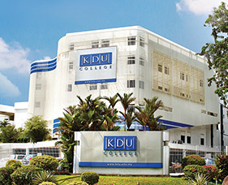

About KDU
KDU STORY
- KDU Penang University College is a member of Paramount Education, a fully integrated provider that offers quality education from primary and secondary, both local and international, through to undergraduate and post-graduate levels, as well as executive and professional development programmes.
- Paramount Education is proud to have had over 100,000 students since its inception in 1983, testament to its 35-year track record for providing good quality, high value education, anchored on the promise of shaping characters and building careers.
- Paramount Education is the education arm of Paramount Corporation Berhad, a public company that is listed on the Main Market of Bursa Malaysia Securities Berhad and whose diversified business interests also include property development through its subsidiary, Paramount Property. FIND A PROGAMME FOR YOU
Our Campus

Explore